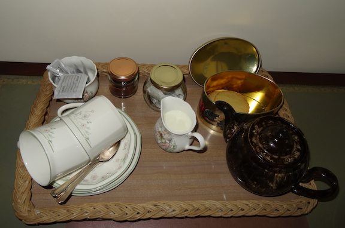
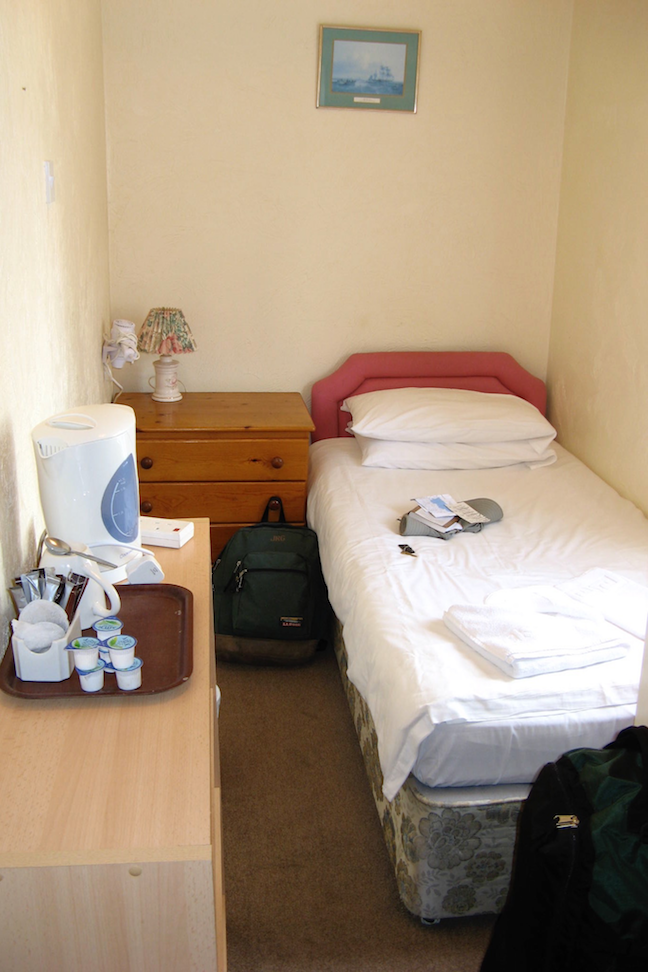
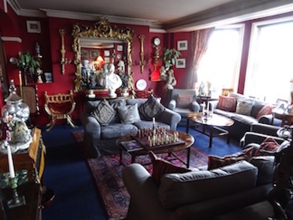

American Walker in Britain Part 3
Mar 15, 2017British Walking
Planning an Itinerary
You have decided on where you are going to walk. Next you have to work out a detailed itinerary. For any trail covered by a Trailblazer book, it should contain a page that shows suggested itineraries for a relaxed, medium, or fast pace and for B&B’s, hostels or bunkhouses, and for camping. That produces a total of nine itineraries. I’m assuming you are walking from B&B to B&B (rather than camping or a tour where some transport is provided). I have always thought of myself as a “medium” sort of guy so I have focused on the “medium pace” suggested itinerary. Do as I say, not as I do! In future I plan to take the suggested “relaxed pace” more seriously. (Why not? I also think of myself as a “relaxed” sort of guy.) As an example, for the West Highland Way the relaxed pace requires eight days, the medium requires seven days, and the fast pace requires only six days. The longest day for the relaxed pace is 15 miles, 20 miles for the medium pace, and also 20 miles for the fast pace.
One can easily be cavalier about miles, at least until one has walked 10 miles and realized that one has another 10 miles to go. Often one is trying to shoe-horn a trip into a minimum number of days. My advice is to resist being too ambitious about how many miles you can travel in a day.
Keep in mind that not all miles are created equal. For all of the suggested itineraries
for the West Highland Way, the shortest day is 8.5 miles, from Kingshouse to Kinlochleven. But that
is not quite as easy as it sounds. Between Kingshouse and Kinlochleven is the Devil’s Staircase and
a climb of 850 feet. The total ascent for the day is about 1,400 feet. That’s not a remarkable amount,
but enough that you will notice you did a fair amount of up hill walking. Often you can find an
“elevation map” that describes how much “up” you will have to do.


When you are fixing your final itinerary, watch out for stops that do not have a lot of accommodations. If you think you may have trouble finding a bed, make sure that stop is available before you book accommodations for the rest of your trip.
Arranging for Accommodations
If you’re doing a multi-day walk, most of the time you are going to be in boonies where accommodations may be scarce. You may not have a lot of choice. Here’s where Trailblazer or Cicerone guide books can be really helpful. Sometimes there are also web sites that list all the available accommodations. Remember that when you are on foot, you don’t want to go far afield. With a car a mile away from a village is nothing. But at the end of a long day of walking you don’t want to have one-mile round trip to village pub to get your evening meal. You want to be close to the path and close to food.
I would strongly advise booking a room in advance. Off-season it might be possible to find something when you arrive, but you wouldn’t want to count on that. I send out an inquiry by email. The disadvantage is that it may take you a day to hear back whether a room is available. The advantage is that there is less potential for miscommunication and misunderstanding. Just because they speak English doesn’t mean you will always be able to understand everyone over the telephone.
Key tip: do not do something like ask for a room on 6/7/2017!!! In the US, we do month/day/year. But in the UK (and in much of the rest of the world), it’s day/month/year. To be safe, I spell out the month and add the day of the week as well, just to be certain. Unless your guide book leads you to be confident that you can get an evening meal, you should ask about that as well. In some B&B the host can make a meal for you. Or they may give you a ride to a local pub. In one place they arranged for a catered meal which I ate in their dining room.
At a B&B keep in mind that it is somebody’s home. Take your backpack off before entering. You don’t know what’s back there and you can easily knock things off a table or do other damage. You probably should take off your boots. Your host probably has had a lot of experience with unkempt walkers, especially in the rain, and will be ready to let you know what is expected. Even some pubs and hotels may have a sign at the front door about muddy boots and may have a place where you can sit and remove them. At one farmhouse during a heavy rain, my host met me at the door with a plastic wash basket and had me dump all my things into right there and then.
A few places have elaborate rules. At a private home one may see rules against washing clothing in the sink.
 The one thing you can be almost certain of is that there will be an electric water kettle in your room with a few packets of biscuits. If your host offers you tea when you arrive, that is likely to mean you will be offered tea and cake in a sitting room. That can be very nice, although I confess that after a long day of walking I am too eager to get into a hot shower and get cleaned up.
 Back at the beginning of these notes, I showed an elaborate canopy bed. I have been happy to make do with more Spartan accommodations as well.
Types of Accommodations
B&B’s can range from someone offering a spare room to guest houses that seem like a small hotel. Read a few of comments on TripAdvisor and you quickly get a sense of whether a particular places is hospitable to walkers. Mention of a “drying room” on a web site is a sign that they welcome walkers. (A drying room generally is nothing fancy. It may just be a closet containing a hot water heater with a stack of newsprint that you can stuff into your boots to help them dry.) The attitude of your host can vary. Some like the social contact beyond picking up some extra cash For some farmhouse B&B’s walkers are just another money-making crop. On the whole I have experienced pleasant hospitality.
About half the time I have stayed in a pub or a small hotel. Some pubs function as a hotel as well as a bar and restaurant. In other cases, they the pub is the core business and they just have a couple of rooms that they let out as a B&B. Some pubs can be a bit noisy on a weekend night. In general, I have modest expectations and I am rarely disappointed.
A cooked breakfast is always part of the package and is included with the price. Feel free to ask for “packed lunch”. At a small B&B it would be best to do that at the time you book the room.
An “en suite” bathroom means the bathroom (with toilet) is in the room. A “private bath” means that you have to go out of your room to get to your bathroom. But you are not sharing it with anybody. I have encountered a “shared bath” very infrequently, but if you don’t see either “en suite” or “private bath” be on the lookout for a shared bath. You can see ingenious ways that people have carved up rooms and closets to make room for a bathroom. It’s not just Americans who have a strong preference to avoid a shared bathroom.
Electricity
As a side effect of the high voltage used in the British electric system (double the voltage in the US), they are very anxious to keep electricity away from the bathroom. The only electric outlet you will see in the bathroom is a special lower voltage outlet for electric shavers. You won’t find a wall switch inside the bathroom, although there may be a non-conducting pull cord hanging down for an overhead lamp.
And yet in most cases shower water is heated by electricity. Ah, British showers. Sometimes they can be a problem. First issue is that sometimes there is a master switch outside the bathroom that must be on before you can get hot water in the shower. If you don’t know about that switch and if it is turned off, trying to take a hot shower can be a very frustrating experience. It might be a pull cord. The shower controls can be hard for an American to decipher. Generally there is a separate control for the volume of the water and for the temperature of the water. Sometimes they work very well. And sometimes they don’t, especially if there is variation in the water pressure. While 230 volts makes it easier to electrocute someone than our 115, it does make it easier to produce hot water on demand at the shower head. In fancier showers, there is a thermostat where you specify the actual temperature of the water. But it’s in centigrade so that’s just another source of confusion.
{kind=link}
Of course you will need a adapter plug so you can charge your phone. Electronic devices these days run a wide range of voltages, but you won’t be carrying something like a hair dryer where a change of voltage would be required. One small trick about UK electric outlets: there is a small on/off switch for each plug. When it is powered on, a small bit of red color will show (see this example). Keep this in mind or you may be surprised to find that your phone has not charged overnight.
{kind=link}